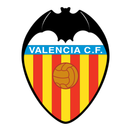
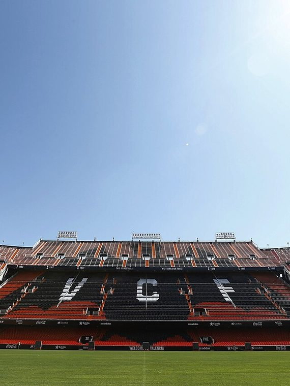
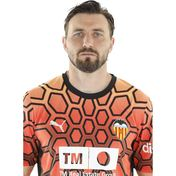
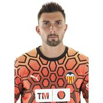
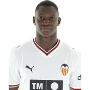
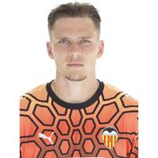
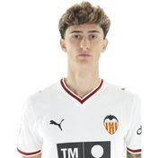
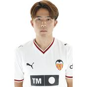

VAHistórico de la Liga
Valencia CF
1919
Año de fundación del club
Che / Murciélagos
Una breve historia
Fundado en 1919, el Valencia CF vivió su época dorada a comienzos de los 2000, ganando dos Ligas y llegando a dos finales consecutivas de Champions League (2000 y 2001). Es uno de los clubes con más historia del fútbol español.
Fieles a los colores
de Valencia

📷Foto pendiente
(valencia-1.jpg)';" />
📷
Foto pendiente
(valencia-2.jpg)';" />
Foto pendiente
(valencia-2.jpg)';" />
Títulos y logros
Vitrina de títulos
0
LaLiga
0
Copa del Rey
0
UEFA Europa League
0
Recopa de Europa
La rivalidad
El duelo que enciende a la afición
Valencia CF
VS
Levante UD — El Derbi Valenciano
Temporada 2026 / 27
Plantilla del primer equipo
Datos de ejemplo — reemplázalos con la plantilla real en data/teams.js.
1

🧑';" /> Dimitrievski Portero
2
🧑';" />
G. Rodriguez
Centrocampista
3
🧑';" />
Copete
Defensa
4
🧑';" />
Diakhaby
Defensa
5
🧑';" />
Tárrega
Defensa
6
🧑';" />
Sadiq
Delantero
7
🧑';" />
Danjuma
Centrocampista
8
🧑';" />
Javi Guerra
Centrocampista
9
🧑';" />
Hugo Duro
Delantero
10
🧑';" />
Elliott
Centrocampista
11
🧑';" />
L. Rioja
Centrocampista
12
🧑';" />
De Haas
Defensa
13

🧑';" /> C.rivero Portero
14
🧑';" />
Gayà
Defensa
15

🧑';" /> Dieng Centrocampista
18
🧑';" />
Pepelu
Centrocampista
19
🧑';" />
Raba
Delantero
20
🧑';" />
Foulquier
Defensa
21
🧑';" />
J. Vázquez
Defensa
22
🧑';" />
Arnau
Defensa
23
🧑';" />
Ugrinic
Centrocampista
24
🧑';" />
Maffeo
Defensa
25

🧑';" /> Van Oevelen Portero
27
🧑';" />
Otorbi
Delantero
29
🧑';" />
Panach
Defensa
31
🧑';" />
Gamón
Defensa
33
🧑';" />
Mayol
Centrocampista
36
🧑';" />
I. Córdoba
Defensa
37

🧑';" /> Aimar Delantero
38
🧑';" />
Jaume Durà
Centrocampista
39

🧑';" /> Ryunosuke Centrocampista
41
🧑';" />
M. Navarro
Defensa
null
 Tenés
Delantero
Tenés
Delantero
Tenés
Delantero